V39 / V38 / V37
Latest detail reel
The newest retail displays, Town Square recess and Melton Road scenes.
Work in progress · Blender previews. The latest v39 detail appears in the still reel and gallery; the full moving tour shows v34. These previews do not show verified BO3 gameplay.
Your house and the surveyed street extension, with materials and daylight. Radiant testing is set aside.
Open all latest Blender previews →

V39 · Aerial views
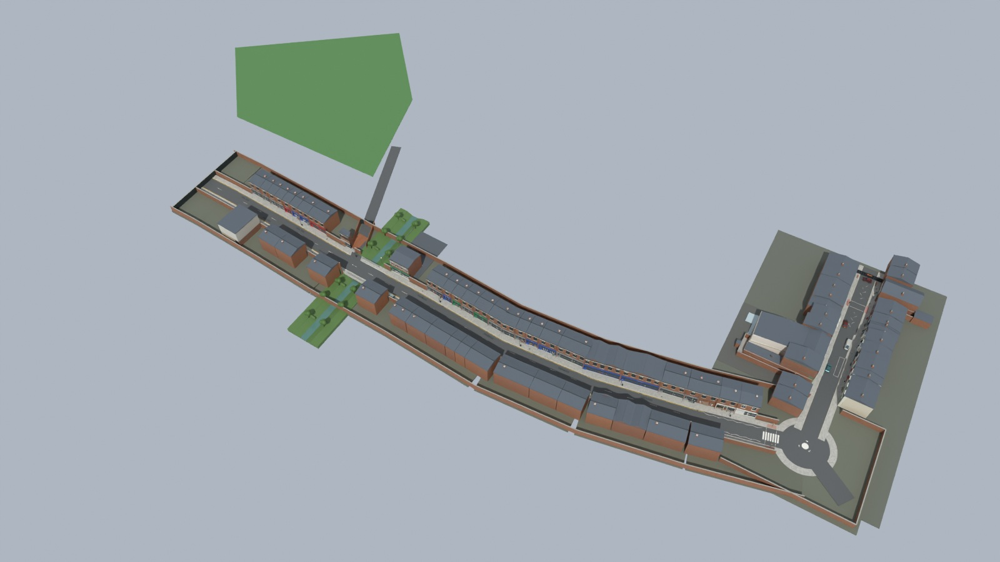
V39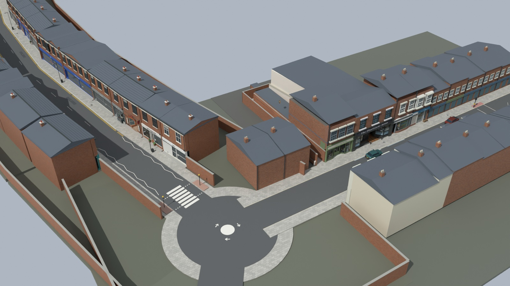
V39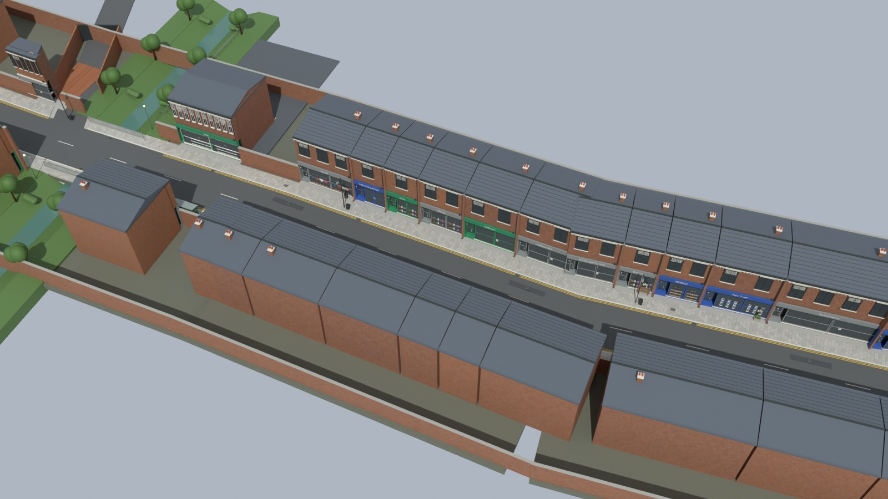
V39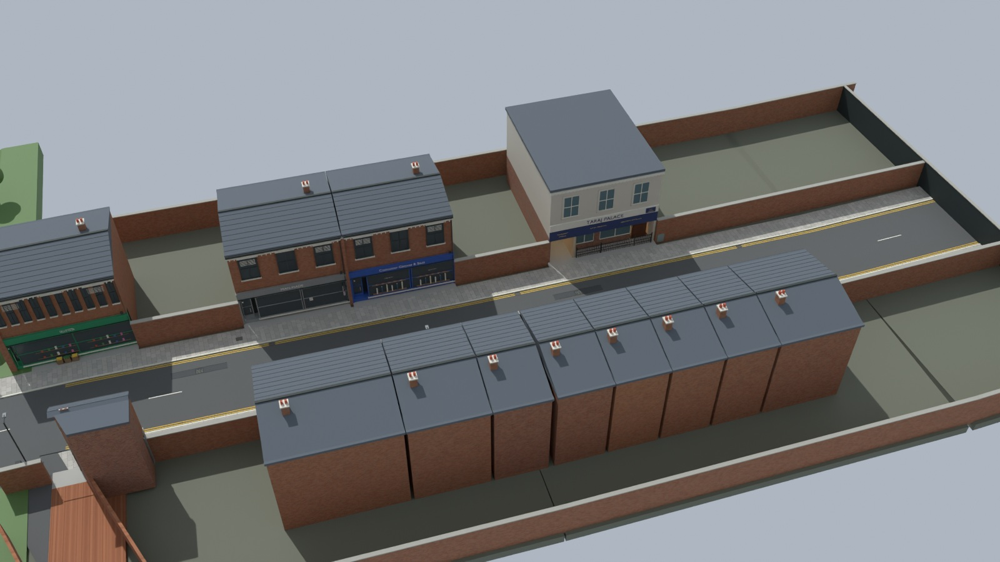
V39The newest retail displays, Town Square recess and Melton Road scenes.
High Street, the pub interior, rear alley, Melton Road and Taraj.
Pub interior and rear service lane.
Rear alley before and after.
V39–V37 · Select a still to view it full size.
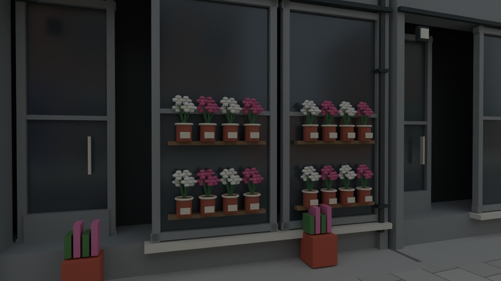
Designer Daisies / V39Individual flower displays
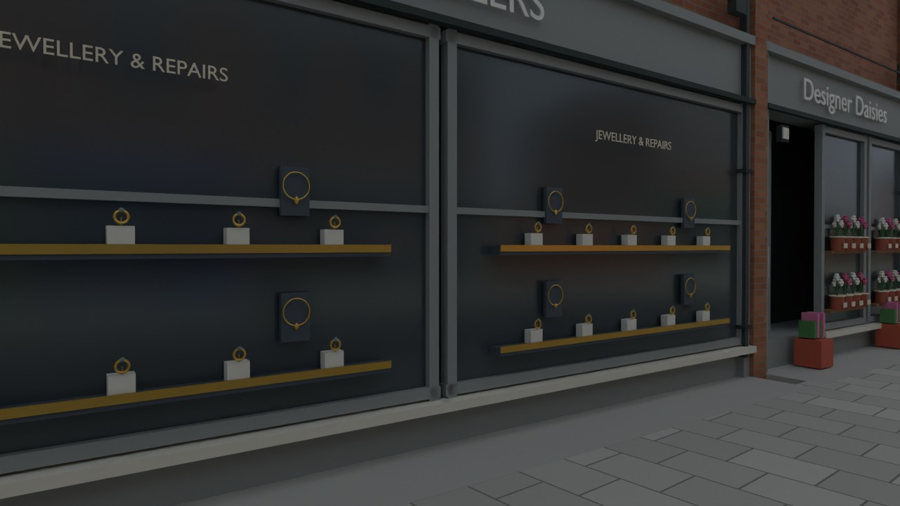
Syston Jewellers / V39Jewellery trays and necklaces
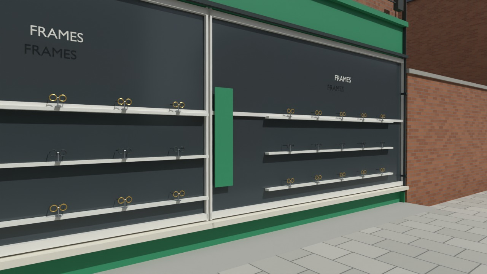
Specsavers / V39Spectacle frames and stands
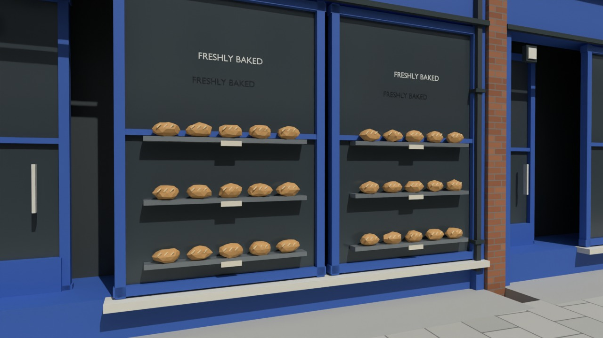
Greggs / V39Bread trays and bakery detail
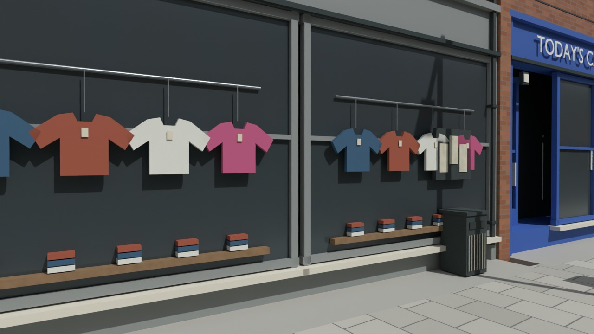
Age UK / V39Clothing displays and tags
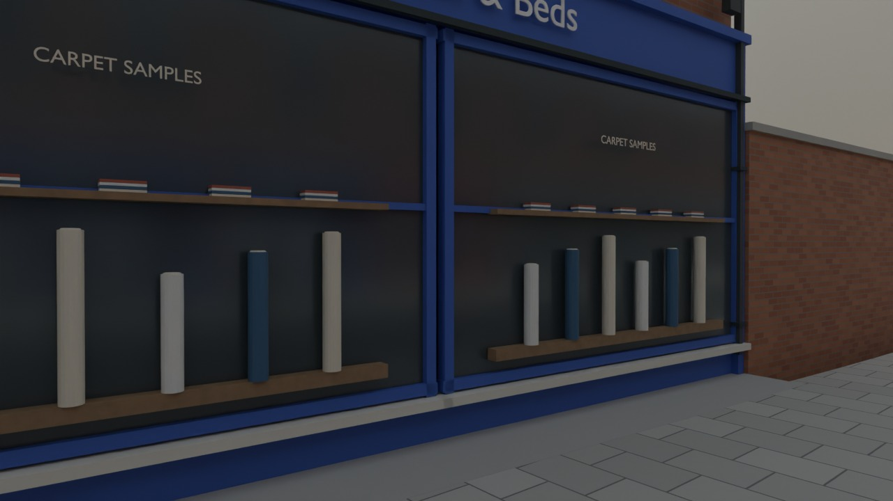
Carpets & Beds / V39Carpet rolls and sample swatches
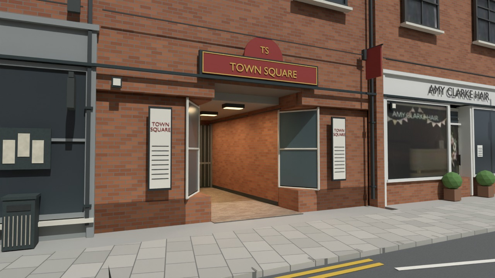
Town Square / V38Red and gold recessed entrance
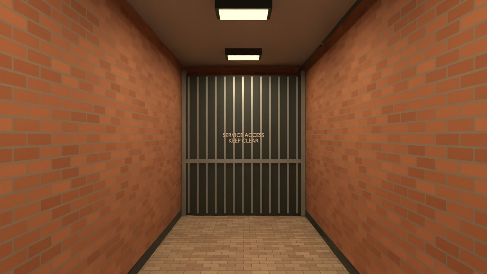
Town Square recess / V38Enclosed passage and warm lighting
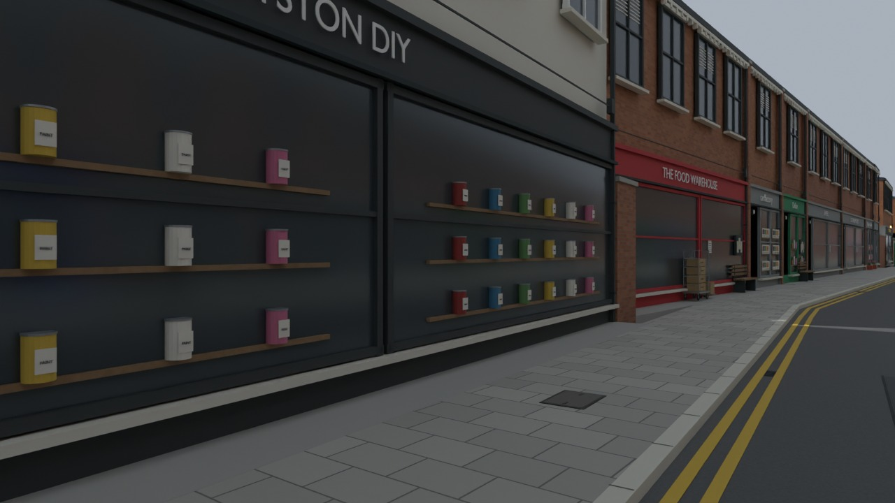
Syston DIY / V38Individual paint tins
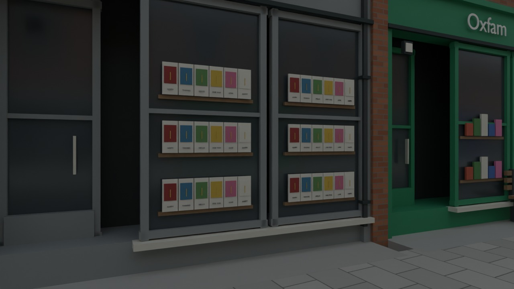
Greeting cards / V38Layered card displays
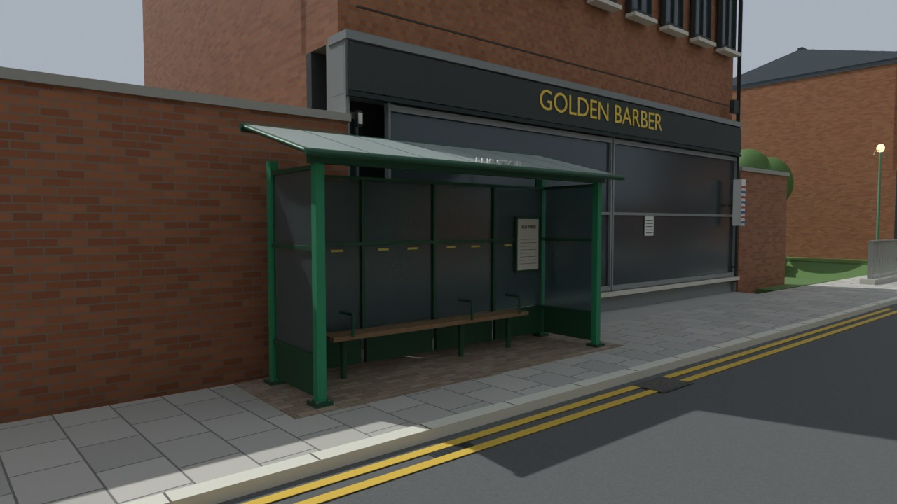
Melton Road shelter / V37Glazing, seating and timetable
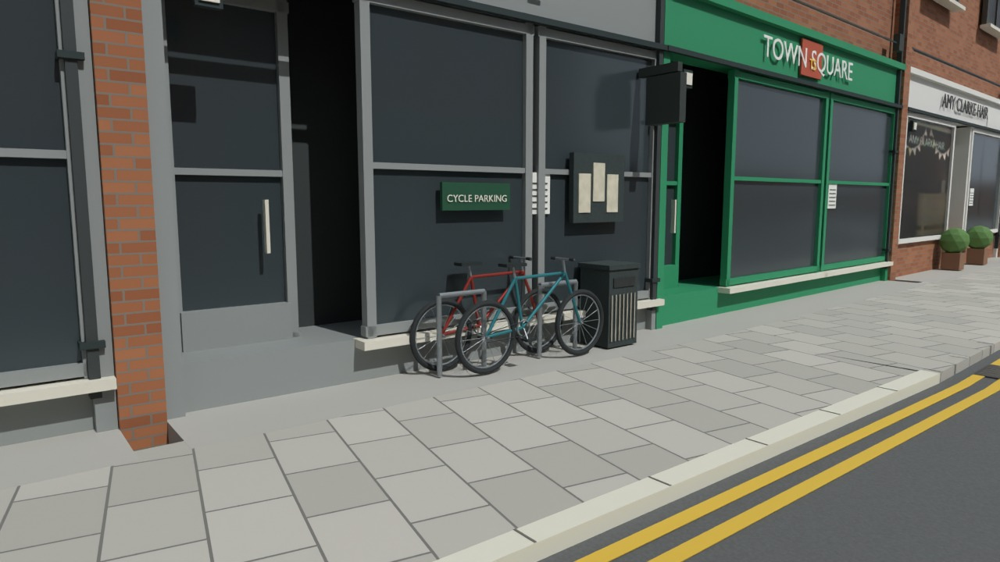
Cycle parking / V37Bicycles and steel stands
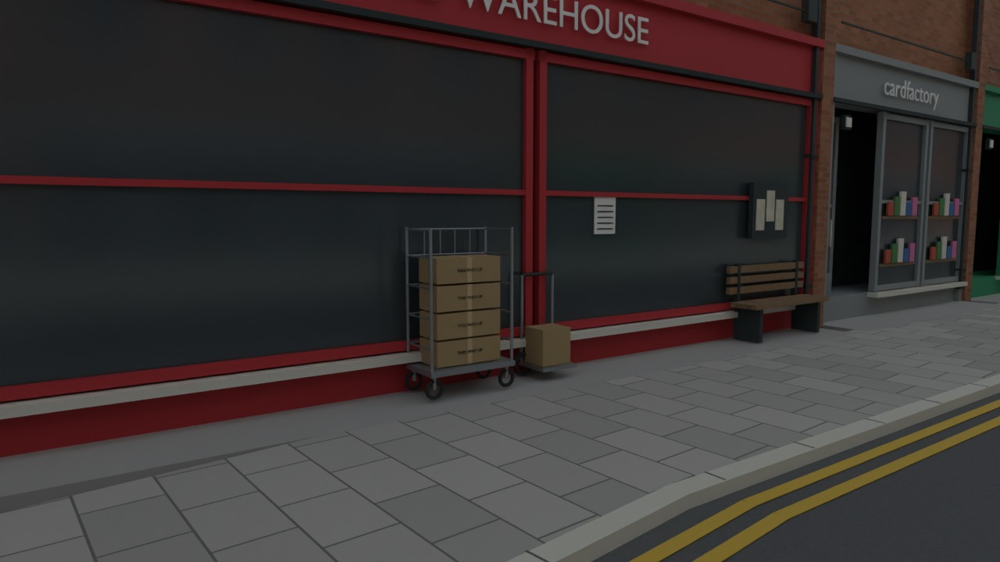
Delivery scene / V37Roll cage, cartons and handtruck
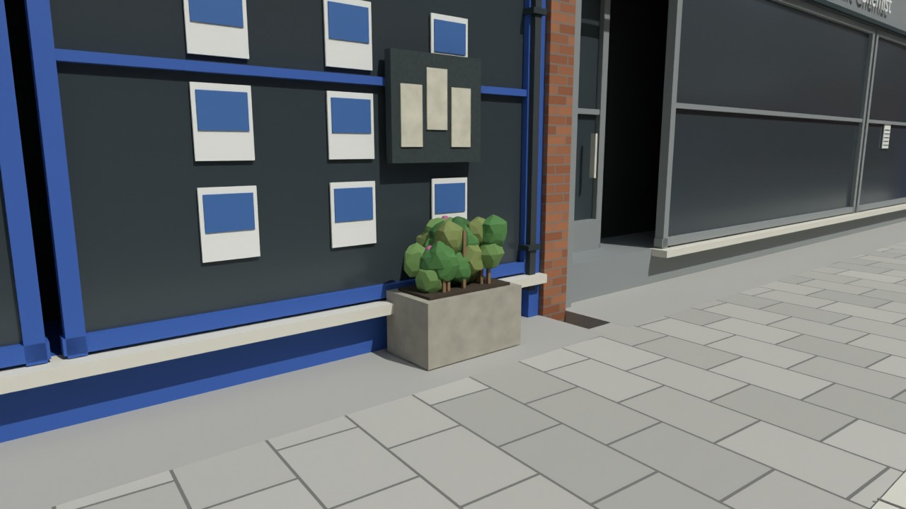
Street planting / V37Fuller foliage and flowers